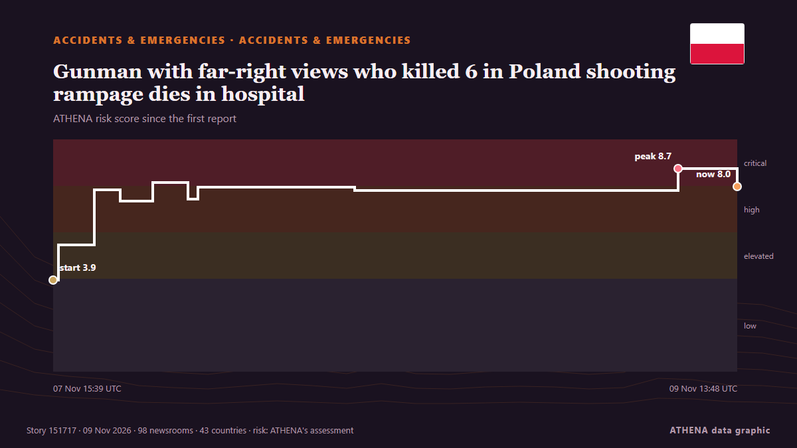

Europe
Europe : les derniers événements pays par pays, avec risque, sources et pays selon ATHENA.

Accidents et urgencesGunman with far-right views who killed 6 in Poland shooting rampage dies in hospital
The man, described as being his mid-20s, was shot by police during Saturday’s attack in the main square of Poland’s second-largest city. de NBC News (World)
US soldier arrested for Russia spying: What we know
A 41-year-old man has been arrested near Gloucester on suspicion of offences under the National Security Act. de Al Jazeera English
12 dead and 50 injured in Bulgarian motorway pile-up
Twelve people have died and 50 were injured in pile-ups on both sides of a motorway in southeastern Bulgaria, whose roads rank as the most dangerous in the EU. de RTÉ News
Spain begins three days of mourning after train crash kills 69
Spain's second high-speed rail disaster this year, in which one train struck another from behind, killing 69 people, has raised fresh concerns about the safety of the country's rail network ahead of… de France 24 English
High-speed train collision in Spain: 68 dead, more than 100 injured
The deadliest train collision in Spain since 2013. de Mothership
39 killed as migrant boat sinks off Senegal
Greek coast guards rescued 28 migrants and found the body of a man on a boat in distress near Crete. de Arab News
Endurance athlete swims in Strait of Hormuz to highlight Iran war's impact on wildlife
British endurance swimmer Lewis Pugh has swum in the North Pole and Antarctica to draw attention to environmental causes. de Mainichi (English)